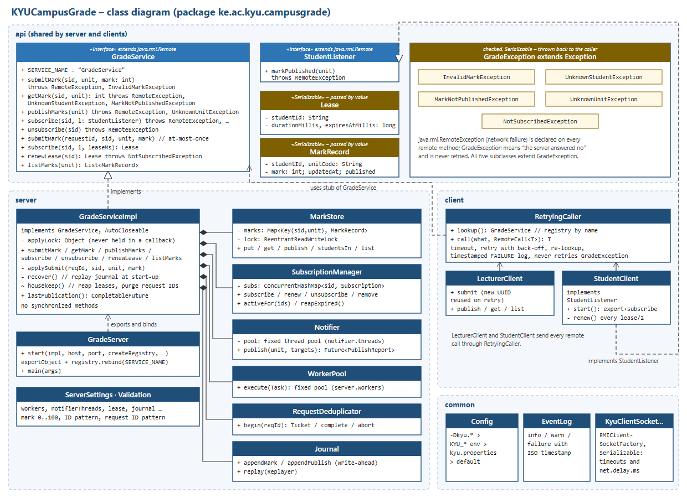
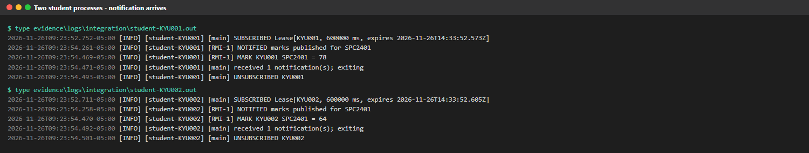
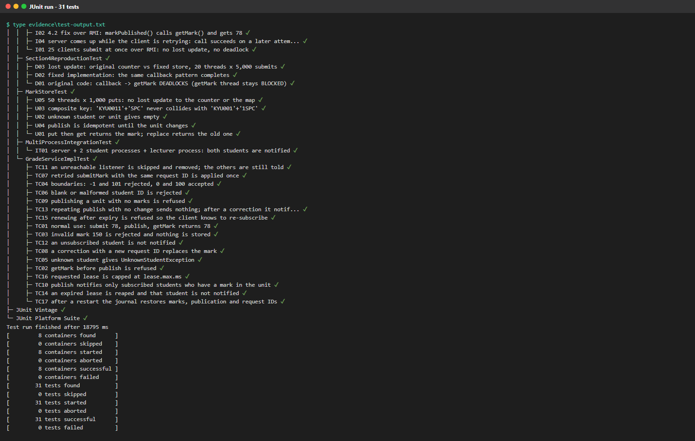
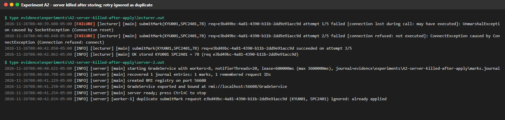
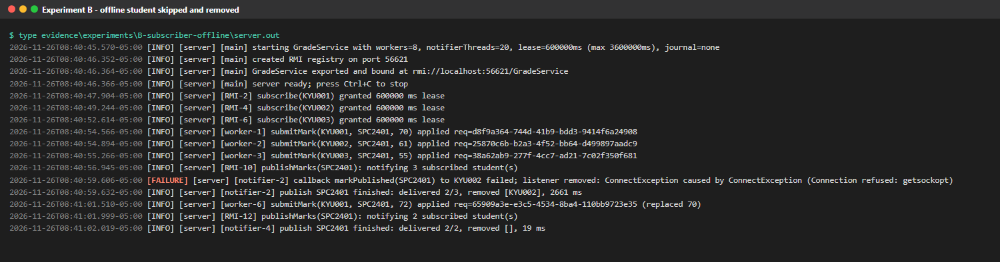
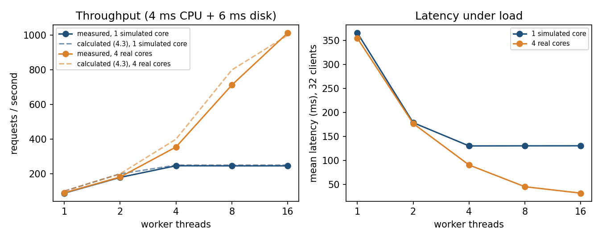
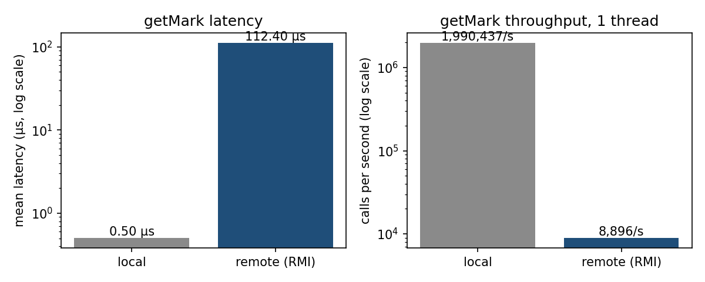
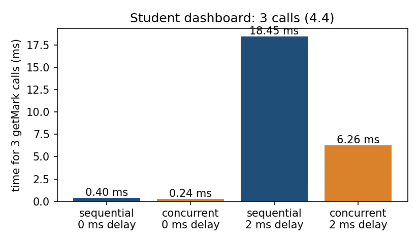

| Group | Group 12 |
| Unit | SPC2401 |
| Repository | github.com/francklinegabs/SPC2401-Group12 (tag v1.0) |
| Platform | Java 21, Java RMI, JUnit 5 · Windows 10, 4 cores |
| Date | 26 November 2026 |
| # | Name | Registration number |
|---|---|---|
| 1 | Franckline Were | CT101/G/19845/23 |
| 2 | Kelvin Lemaitoi | CT101/G/18802/23 |
| 3 | Eunice Gikaru | CT101/G/18425/23 |
| 4 | Ashley Odiwuor | CT101/G/18148/23 |
| 5 | Jeff Njuguna | CT101/G/18097/23 |
| Step | Component | What it does here | Message held |
|---|---|---|---|
| 1 | Lecturer client code | LecturerClient.submit makes a request ID, then calls stub.submitMark(...) like a local method through RetryingCaller, which starts the 5 s timeout. The thread blocks until a reply comes. | A Java call: method submitMark and arguments "KYU001", "SPC2401", 78 (plus the request ID). |
| 2 | Client stub (proxy) | The dynamic proxy's UnicastRef.invoke marshals the call. It writes the object ID, a 64-bit hash that names submitMark(String,String,int), and the arguments, serialised with ObjectOutputStream. | Request bytes: [ObjID][method hash][TC_STRING "KYU001"][TC_STRING "SPC2401"][int 78]. |
| 3 | Communication module | The RMI transport takes a TCP connection to the server's export port from its pool (made by KyuClientSocketFactory with connect and read timeouts) and sends a JRMP Call message. On the server, an "RMI TCP Connection" thread reads it. | A JRMP Call message (op 0x50 + request bytes) inside one or more TCP segments. |
| 4 | Server dispatcher (skeleton) | UnicastServerRef.dispatch looks up the ObjID in the object table and maps the method hash to the Method. It unmarshals the three arguments and calls the method by reflection on the same RMI thread. | Unmarshalled arguments: fresh copies of "KYU001", "SPC2401" and 78 in server memory. |
| 5 | GradeService implementation | Checks 0 ≤ 78 ≤ 100, hands the work to a worker thread, claims the request ID, appends to the journal, and stores (KYU001, SPC2401) → 78 under the write lock. | Journal line M|req|KYU001|SPC2401|78|t and the map entry Key(KYU001,SPC2401) → 78. |
| 6 | Reply path | The dispatcher writes a JRMP Return (a normal-return byte, with no value for void) back on the same connection. The stub reads it and returns normally. If the server had thrown InvalidMarkException, it is serialised back and re-thrown in the lecturer's thread. | Return header: normal (or exceptional + serialised exception). The client then releases the connection to the pool. |
| Method | Semantics | Justification (idempotence) | Server must remember |
|---|---|---|---|
submitMark | At-most-once | Not idempotent: each run adds to the submitted count, and a late retry of "78" would overwrite a newer correction to 80 (TC07). | A table of request IDs already applied (kept 24 h, journaled so it survives a crash), plus each ID's outcome. |
getMark | At-least-once | Idempotent read: running it twice returns the same mark and changes nothing. | Nothing. |
publishMarks | At-least-once | Made idempotent: a repeated publish with no change since the last one sends no second notification (TC13). | The published version of each unit, so it can tell "already published, nothing changed". |
| Call and parameter | By value / reference | What travels |
|---|---|---|
submitMark: studentId (String) | By value (serialised) | A copy of the characters "KYU001" (TC_STRING, length 6, UTF bytes); the server works on its own copy. |
publishMarks: unitCode (String) | By value (serialised) | A copy of "SPC2401" (7 UTF bytes plus a header). |
subscribe: listener (StudentListener) | By remote reference | Not the object but its stub: the student's IP, export port, object ID, the interface name and our serialised KyuClientSocketFactory. The server calls back over TCP into the student's JVM. |
If the student's client crashes: the server's stub now points to a dead endpoint. The next markPublished fails with ConnectException (or times out after socket.timeout.ms). The notifier catches this, logs a FAILURE, and removes that subscription without stopping the others. Even if no publish happens, the lease stops being renewed, so the housekeeping thread removes the subscription when the lease expires (experiment B, TC11, TC14).
| Cause | Mark stored? | Client action |
|---|---|---|
1. Server process or host is down, or the service moved (ConnectException: Connection refused, or NotBoundException from the registry). | No: the request never left the client. | Safe to retry. Look the name up again in the registry (it may now point to a restarted or backup server), with back-off. |
2. Connection lost during the call: the server crashed or the link dropped (UnmarshalException caused by Connection reset). | Maybe: it may have died before (exp. A1) or after (exp. A2) storing. | Retry with the same request ID. The server applies it if it is new and ignores it if it was already applied (A2: "duplicate … ignored"). |
3. Timeout: slow network or overloaded server, so no reply within client.timeout.ms. | Maybe, possibly later: the request may still be queued or in flight. | Retry with the same request ID. If every attempt times out, report "unknown" to the lecturer and check with list/getMark; in exp. C it was in fact stored once. |
| Event type | Publisher | Subscribers | Push / pull | How it is delivered |
|---|---|---|---|---|
| MarksPublished(unit) | GradeService, when a lecturer calls publishMarks | Subscribed students with a mark in that unit | Push | Callback markPublished(unit) from the notifier pool. The mark itself is then pulled with getMark, so no mark travels to the wrong student. |
| MarkCorrected(unit) | GradeService, on a re-publish after a correction | The same unit's subscribed students | Push | Re-publish is sent only if the unit changed since the last publish (unit version), so a plain retry sends nothing. |
| LeaseExpired(student) | Server housekeeping thread | The student client itself | Pull | Not pushed, because the client is probably unreachable. The client learns it when renewLease throws NotSubscribedException, then re-subscribes. |
Lease: 10 minutes (lease.default.ms = 600000, capped at 1 hour). The client renews every 5 minutes, which is half the lease.
Laptop sleeps for 2 days: renewals stop, so within ≤ 10 min the lease expires and the reaper removes the subscription. No callbacks are wasted on a dead stub, and if a publish arrives first the callback fails and the listener is removed anyway. On waking, the client's next renewLease is refused. The client then re-subscribes and pulls getMark for each of its units (--units), because missed notifications are not queued (TC14, TC15).
SizingExperiments, 2,000 listeners that each take 50 ms): 1 thread 106.96 s, 20 threads 5.64 s.
publishMarks should use the pool, asynchronously. The lecturer's call returns at once, all students hear in about 5 s instead of 100 s, and one dead or slow student holds only 1 of the 20 threads instead of delaying everyone behind it. In experiment B, the dead student took 2.6 s to fail while the other two were already notified.
| Task | Layer | Where in KYUCampusGrade |
|---|---|---|
| Converting a mark object into bytes | Middleware | RMI stub and dispatcher marshalling with Java serialisation of MarkRecord, Lease and the arguments. |
| Finding "GradeService" by name | Middleware | RMI registry: GradeServer calls rebind; RetryingCaller.lookup() calls lookup. |
| Scheduling threads on the CPU | OS | The kernel scheduler runs our RMI connection, worker-N and notifier-N threads (Java threads are 1:1 kernel threads). |
| Sending packets over TCP | OS | The kernel TCP/IP stack sends the JRMP bytes written to the sockets that KyuClientSocketFactory opens. |
| Checking a lecturer may submit marks | Application | At the start of GradeServiceImpl.submitMark, beside the existing input checks (a role check is listed as future work in 7.5). |
| Retransmitting a lost request | OS (lost packets) and middleware/application (lost request) | Kernel TCP retransmits lost segments; when a whole call is lost, RetryingCaller re-sends it with the same request ID. |
| Item | KYU example |
|---|---|
| Transparency RMI gives: access | The student calls service.getMark(...) exactly like a local method; the stub hides marshalling and TCP. |
| Transparency RMI gives: location | Clients ask the registry for "GradeService" and never name the server's host or port in code (host comes from kyu.properties). |
| Cannot fully give: failure | The three Linux servers are separate kernels that know nothing of each other. If server 2 crashes during a submitMark, the lecturer sees a RemoteException, so our client must retry and fail over itself (exp. A1/A2). |
| Kernel feature that would speed it up | Zero-copy message passing (e.g. Linux MSG_ZEROCOPY/io_uring): the kernel sends from the user buffer instead of copying it. This removes the copying cost (0.3 ms per call in 4.4) and some system-call context switches. |
| Problem report | Transparency violated | One-line fix |
|---|---|---|
| Admin moved GradeService to another host and every client broke because the host name was hard-coded. | Location (migration) | Bind by name in the registry and read the registry host from configuration/DNS, as Config does. |
| Client code must catch the error and switch to a backup server by hand. | Failure | Put fail-over in the middleware: the proxy retries and re-looks up a replica list automatically. |
| Two lecturers' updates to the same mark overwrote each other. | Concurrency | Serialise updates under a lock on the server and reject a stale write with a version check. |
| Clients call one method for cached marks and a different one for marks on the server. | Access | One getMark interface, with the cache hidden inside the stub/proxy. |
| Marks read from a replica server sometimes show old values after an update. | Replication | Acknowledge a write only after all replicas apply it (or read from the primary), using version numbers. |
| Requirement | Network OS | Distributed OS | Multiprocessor OS |
|---|---|---|---|
| Hides where GradeService runs | Poor | Good | Good (one machine) |
| Each campus server stays autonomous | Good | Poor | Poor |
| Scales to 20,000 students | Good | Partial | Poor |
| Survives one node failing | Partial | Partial | Poor |
Choice: a network OS (three ordinary Linux servers) with Java RMI middleware. It scores best on autonomy and scale, and the middleware adds back the transparency a NOS lacks: the registry hides the location and our retry layer partly hides failures. A distributed OS would need one special kernel on all three servers, and a multiprocessor OS is a single box, so a single point of failure for the whole campus.
Justification: thread-per-request would create up to 2,000 threads in the burst (about 1 MB of stack each, plus creation cost; 0.62 ms each measured in 3.4). Thread-per-connection ties a thread to each idle student, and thread-per-object would push every request through one thread (20 s queue). A fixed pool bounds threads and memory, queues the burst, and reuses threads so there is no creation cost.
Drawback: when the burst exceeds the pool, requests queue and latency rises, and a request blocked on slow I/O holds a worker. Mitigation: size the pool from the CPU-to-wait ratio (4.3 gives 3 threads per core), keep callbacks on a separate notifier pool so slow students cannot starve request workers (done), and add a client timeout so queued callers retry later (done).
| Aspect | Thread inside the server process | Separate process |
|---|---|---|
| Address space | Shared: reads the subscription map and the mark store directly. | Own address space: needs IPC/RMI to get the subscriber list and each publish event. |
| Creation cost | 0.62 ms measured (create + start + join); paid once, since the pool reuses threads. | 234 ms measured to start a JVM: 378× dearer. |
| Context-switch cost | Low: same page tables, no TLB flush. | Higher: the address space changes, so TLB/caches are refilled, plus IPC copies. |
| Effect of a crash | An exception in one callback is caught; a fatal JVM error (e.g. out of memory) takes down the whole server. | Isolated: the grade server keeps taking marks; only notifications stop until a restart. |
Decision: a thread pool inside the server. The notifier needs the live subscriber list and runs on every publish, so shared memory and cheap threads win. The isolation risk is reduced by catching every callback failure, socket timeouts, and a bounded pool.
Lost update. submitMark is not synchronised, so lines (1)–(3) form a read-modify-write that two RMI threads can interleave:
| Time | Thread A: submitMark(KYU001, …) | Thread B: submitMark(KYU002, …) | submitted |
|---|---|---|---|
| t1 | (1) old = 5 | 5 | |
| t2 | (1) old = 5 | 5 | |
| t3 | (2) put KYU001 | (2) put KYU002 (unsynchronised HashMap) | 5 |
| t4 | (3) submitted = 6 | 6 | |
| t5 | (3) submitted = 6, so one update is lost (should be 7) | 6 |
The concurrent marks.put also races with itself and with the synchronised getMark (different locks, so no mutual exclusion), which can lose entries. The key sid + unit is ambiguous too: "KYU0011"+"SPC" equals "KYU001"+"1SPC".
Section4ReproductionTest D03 with 20 threads × 5,000 submits: the original lost 34,290 of 100,000 counter updates and kept only 99,039 entries; the fixed store kept 100,000 and 100,000. In other runs the original lost 26,975, 33,233 and 95,443.
// Fix used in MarkStore: one write lock around the whole read-modify-write, and a composite key
lock.writeLock().lock();
try { marks.put(new Key(sid, unit), record); submitted++; }
finally { lock.writeLock().unlock(); }
publishMarks("SPC2401") and takes the object's monitor (synchronised method).l.markPublished(unit) on the student and blocks waiting for the reply.markPublished, the student calls getMark(...) on the server. It arrives on another RMI thread, T2.getMark is synchronised, so T2 waits for the monitor T1 holds.Section4ReproductionTest D01 runs the original class with the callback's getMark on a second thread (as RMI does). After 2 s the publisher is WAITING and the getMark thread is BLOCKED, so the deadlock is reproduced.
Fix (used in GradeServiceImpl): never hold a lock while making a remote call. Take a snapshot of the subscribers under the lock, release it, and send the callbacks from the notifier pool. getMark uses the store's read lock, which a publish never holds during a callback.
public void publishMarks(String unit) throws RemoteException, UnknownUnitException {
List<Subscription> targets;
synchronized (applyLock) { // short critical section, no remote calls
if (store.publish(unit) == UNKNOWN_UNIT) throw new UnknownUnitException(unit);
targets = subscriptions.activeFor(store.studentsIn(unit)); // snapshot copy
} // lock released here
lastPublication = notifier.publish(unit, targets); // callbacks on notifier-N threads
}
D02: the same callback pattern finishes and fetches 78 in 3 ms. I02 over real RMI, and the IT01 student processes, also call getMark inside markPublished.
Why more threads than (ii) do not help: at 3 threads the CPU is the bottleneck, at 100 % busy. Extra threads only queue for it and add context switches, memory and lock contention, so throughput stays at 250 and latency rises. Measured in 7.4 (one simulated core): 88 → 179 → 246 → 246 → 246 req/s for 1, 2, 4, 8 and 16 workers.
| Cost | With LRPC (same machine) | Why |
|---|---|---|
| Network 1.0 ms | Removed | No network or protocol stack: the call stays inside one kernel. |
| Acknowledgement 0.1 ms | Removed | No transport protocol, so no acknowledgements. |
| Copying 0.3 ms | Mostly removed | Arguments are copied once onto a shared argument stack that both domains map, instead of about four copies. |
| Context switches 0.4 ms | Reduced | The client's thread runs directly in the server's domain, so there is no scheduler dispatch or server thread wake-up, just a domain switch. |
| Marshalling 0.2 ms | Reduced | Simple stubs copy the bytes; no data-representation conversion is needed on the same machine. |
7.4 with 2 ms injected per message: 18.45 ms sequential vs 6.27 ms concurrent, a 2.94× speed-up against the calculated 3×.
| KYUCampusGrade element | Amoeba equivalent and its role |
|---|---|
| Lecturer's office PC | Workstation / terminal. Runs only the user interface and sends requests; real computing is done in the processor pool. |
| Server host running GradeService | Specialised server machine (like the Bullet file server). It runs the GradeService server process, which listens on its get-port for requests. |
| Registry lookup of "GradeService" | Directory server. Maps the ASCII name "GradeService" to a capability (server port + object + rights + check) that the client then uses. |
| Pool of spare server CPUs | Processor pool. CPUs allocated on demand by the run server, e.g. to start extra GradeService workers during the 2,000-student burst. |
| Field (bits) | Server port (48) | Object (24) | Rights (8) | Check (48) |
|---|---|---|---|---|
| Lecturer (owner) capability | P = port of GradeService | 17 = SPC2401 marks | 0xFF (all) | C = random number stored by the server with object 17 |
| Student capability (made by the server) | P (same) | 17 (same) | 0x01 (READ only) | f(C ⊕ 0x01), where f is a one-way function |
0x01 to the GradeService server (std_restrict).0x03 (READ + WRITE) needs the matching check f(C ⊕ 0x03). Computing that needs C, which never leaves the server, and f cannot be inverted to get C back from f(C ⊕ 0x01). A forged capability fails the comparison and is rejected./* GradeService server: 4 worker threads */
main():
G = random private get-port; P = F(G) /* public put-port */
register "GradeService" -> capability(P, ...) in directory
for i in 1..4: thread_create(worker)
worker():
loop:
getreq(&hdr, req, MAX) /* blocks for next request on G */
switch hdr.h_command:
case SUBMIT: check rights(WRITE)
store(req.sid, req.unit, req.mark)
hdr.h_status = STD_OK
case GET: check rights(READ)
rep.mark = lookup(req.sid, req.unit)
default: hdr.h_status = STD_COMMAND
putrep(&hdr, rep, len) /* reply goes to this caller */
/* Lecturer / student client */
cap = dir_lookup("GradeService")
hdr.h_port = cap.port
hdr.h_priv = cap.private /* object, rights, check */
hdr.h_command = SUBMIT
req = { "KYU001", "SPC2401", 78 }
status = trans(&hdr, req, len,
&rhdr, rep, MAX) /* blocking RPC */
if status < 0: retry trans(...) /* at-most-once by
Amoeba RPC */
if rhdr.h_status != STD_OK: show error
"Marks published" to many students: Amoeba group communication. Students' processes join a group for SPC2401, and the server does one grp_send, which Amoeba delivers reliably and in total order to every member (via the sequencer), instead of 2,000 separate RPCs.
| One line each | |
|---|---|
| Strength 1 | Capabilities give unforgeable, fine-grained rights (student = READ, lecturer = all) with no ACL lookup on each request. |
| Strength 2 | The processor pool and fast, totally-ordered group communication suit a burst of 2,000 students and a one-to-many "marks published" event. |
| Weakness 1 | It is a research OS, not compatible with KYU's existing Linux servers, Java software or staff skills, so everything would be rewritten. |
| Weakness 2 | Capabilities can be copied freely and revoking one student's means changing C for everyone; RPC is blocking-only with no asynchronous calls. |
| Lesson kept | Unforgeable signed tokens checked by the server (today's OAuth bearer tokens, signed URLs, macaroons) are Amoeba's check-field idea. |
Full source in /src, build and run steps in README.md. The class diagram below shows the remote interfaces, the listener interface, the serialisable classes and the declared exceptions (6.1).

| Req. | How it is met | Evidence |
|---|---|---|
| 6.1 | GradeService and StudentListener extend Remote, and every method declares RemoteException. Lease and MarkRecord are Serializable. GradeServer exports with UnicastRemoteObject.exportObject and calls rebind("GradeService"). The lecturer and student clients call all methods. | IT01, screenshots 01–03 |
| 6.2 | Subscriptions carry a 10 min lease, renewed every 5 min and reaped on expiry. A failed callback is logged, removed, and does not stop the others. | TC10–TC16, exp. B, screenshot 06 |
| 6.3 | RMI connection threads plus a worker pool. MarkStore uses a read/write lock and the subscriptions use concurrent maps. Callbacks run on a 20-thread notifier pool, with no lock held during a callback. | U05, I01, D01–D03, exp. D |
| 6.4 | RetryingCaller: per-attempt timeout, retry with back-off, re-lookup, never retries application errors. A request ID plus the RequestDeduplicator and Journal give at-most-once, even across a crash. Every failure is a timestamped FAILURE line. | TC07, TC17, I03–I05, exp. A1/A2/C, screenshots 05/07 |
| 6.5 | Packages api / server / client / common. No host or port in code: Config reads -Dkyu.*, then KYU_*, then config/kyu.properties. The README covers the registry, the server and two clients. | README.md |
| ID | Function | Input | Expected | Actual | Result |
|---|---|---|---|---|---|
| TC01 | 6.1 submit/get | submit(KYU001, SPC2401, 78); publish; getMark | 78 | 78 | Pass |
| TC02 | 6.1 getMark | getMark before publish | MarkNotPublishedException | MarkNotPublishedException | Pass |
| TC03 | 6.1 submit | Invalid mark 150 | InvalidMarkException, nothing stored | InvalidMarkException, store size 0 | Pass |
| TC04 | 6.1 submit | Marks −1, 101, 0, 100 | −1/101 rejected, 0/100 stored | 2 rejected, 2 stored | Pass |
| TC05 | 6.1 getMark | Unknown student KYU999 | UnknownStudentException | UnknownStudentException | Pass |
| TC06 | 6.1 submit | Student ID "", null, "KYU|001" | InvalidMarkException ×3 | InvalidMarkException ×3 | Pass |
| TC07 | 6.4 request ID | req-1 sent twice; then req-2 = 80; then late req-1 = 78 | Applied once; mark stays 80 | count 1 then 2; mark 80 | Pass |
| TC08 | 6.1 submit | 60 then correction 65 | 65 after publish | 65 | Pass |
| TC09 | 6.1 publish | publishMarks(SPC9999), no marks | UnknownUnitException | UnknownUnitException | Pass |
| TC10 | 6.2 notify | 3 subscribed, 2 have marks | 2 notified, KYU777 not | delivered 2; KYU777 none | Pass |
| TC11 | 6.2 dead listener | KYU001 listener throws ConnectException | KYU001 removed, KYU002 notified | delivered 1, removed [KYU001] | Pass |
| TC12 | 6.2 unsubscribe | unsubscribe twice, then publish | No notification, no error | targets 0 | Pass |
| TC13 | 6.2 republish | publish, publish again, correct, publish | 1, 1, then 2 notifications | 1, 1, 2 | Pass |
| TC14 | 6.2 lease | KYU001 asleep 2 days; KYU002 renews every 30 s | KYU001 reaped, not notified | KYU001 removed; only KYU002 told | Pass |
| TC15 | 6.2 lease | renewLease 1 ms after a 1 s lease ends | NotSubscribedException | NotSubscribedException | Pass |
| TC16 | 6.2 lease | Request 10,000,000 ms; request 0 | Capped 120,000; default 60,000 | 120,000; 60,000 | Pass |
| TC17 | 6.4 journal | Restart server, re-send req-A | Marks recovered, req-A not reapplied | 78/55 recovered, count stays 2 | Pass |
| U05 | 6.3 store | 50 threads × 1,000 puts | 50,000 entries, count 50,000 | 50,000 / 50,000 | Pass |
| D01/D02 | 6.3 deadlock | Callback calls getMark (original vs fixed) | Original deadlocks; fixed completes | BLOCKED/WAITING; fixed 78 in 3 ms | Pass |
| I01 | 6.3 concurrency | 25 RMI clients × 2 submits at once | 50 applied, no deadlock | 50 applied in 636 ms | Pass |
| I03 | 6.4 retry | No server running | 4 attempts, back-off ≥ 700 ms, give up | GaveUpException after 4 attempts | Pass |
| I05 | 6.4 timeout | Server 1.2 s per call, client timeout 0.5 s, 3 attempts | Client gives up; server applies once | submitted = 1, mark 78 | Pass |
| IT01 | 6.1/6.2 | Server + 2 students + lecturer as 4 processes | Both students notified, read 78 / 64 | NOTIFIED + MARK lines in both | Pass |
31 automated JUnit 5 tests, 31 passed, 0 failed (scripts/test.ps1, run time ≈ 19 s). That is 5 store unit tests, 17 service-logic tests, 3 Section 4 reproductions, 5 RMI tests, and 1 multi-process integration test. In the integration test, MultiProcessIntegrationTest starts the server, students KYU001 and KYU002, and a lecturer as four separate JVM processes. Both students log NOTIFIED marks published for SPC2401 and read their own mark, and the server logs delivered 2/2.


| Experiment | What we observed (logs in evidence/experiments) | Semantics observed |
|---|---|---|
| D 22 lecturer processes submit at once (plus 25 threads in I01) | 44 / 44 OK replies, 44 "applied" lines, 22 marks in SPC2401, and 1 mark for the shared key SPC2402 (last writer wins). 0 FAILURE lines, and every process exited. | No lost update, no deadlock. |
| A1 server killed mid-call, before storing | Attempt 1: UnmarshalException (Connection reset), "may have executed". Attempt 2: connection refused. Attempt 3 reached the restarted server: applied once, journal holds 1 entry. | Exactly once (the first attempt did nothing). |
| A2 server killed after storing, before replying | Server-1 logged "applied" and was then killed; the client got Connection reset. Server-2 "recovered 1 journal entries … 1 remembered request IDs" and logged "duplicate … ignored". Journal: 1 entry. | At-most-once held across a crash. |
| B subscribed student taken offline | Publish to 3: KYU001 and KYU003 got their marks in about 0.3 s. KYU002's callback failed (Connection refused after 2.6 s of Windows connect retries) and was removed: "delivered 2/3, removed [KYU002]". The next publish targeted only 2. | At-most-once per notification; the offline student pulls on return. |
| C added network delay | 300 ms per message: stored, 3.4 s total. 1,500 ms per message with a 2.5 s timeout: all 3 attempts timed out and the client logged GAVE UP. The server applied once and logged 2 "duplicate … ignored"; the 3rd attempt died with the client JVM. | Server: at-most-once. Client: outcome unknown ("maybe") until it checks. |
Compared with 1.2: submitMark behaved as at-most-once in A1, A2 and C, as designed. Only the request-ID table makes this true, and only the journal keeps it true across a crash. Experiment C shows the remaining gap: when the client gives up it cannot know the outcome, so the lecturer must verify, exactly as 1.4 cause 3 says. getMark and publishMarks were retried safely (I04, TC13), which matches at-least-once on idempotent calls.


| Call (1 client thread, workers inline) | Iterations | Mean latency | Throughput |
|---|---|---|---|
Local call impl.getMark | 2,000,000 | 0.50 µs | 1,990,437 /s |
| Remote call through RMI (loopback TCP) | 20,000 | 112.40 µs | 8,896 /s |
A remote call costs 224× a local one (marshalling, two system calls and a thread hand-off on each side), which is why 4.4 tries to cut invocation cost.
| Workers | 1 simulated core (as in 4.3) | 4 real cores | ||||
|---|---|---|---|---|---|---|
| Calc. req/s | Measured req/s | Mean latency | Calc. req/s | Measured req/s | Mean latency | |
| 1 | 100 | 88.4 | 365 ms | 100 | 90.4 | 354 ms |
| 2 | 200 | 179.4 | 178 ms | 200 | 181.4 | 177 ms |
| 4 | 250 | 246.4 | 130 ms | 400 | 354.8 | 90 ms |
| 8 | 250 | 246.0 | 130 ms | 800 | 712.7 | 45 ms |
| 16 | 250 | 246.0 | 130 ms | 1,000 | 1,013.6 | 32 ms |



Comparison with 4.3: on one core the curve rises and then stops at 246 req/s from 3–4 workers up, against the calculated 250. That confirms "beyond (ii) more threads do not help". With 1 and 2 workers we got 88 and 179, not 100 and 200, because on this Windows PC Thread.sleep(6) really takes 6.72 ms and RMI adds about 0.4 ms: 1,000 / (4 + 6.72 + 0.4) = 90 req/s. Latency follows Little's law with 32 clients (W = 32 / X: 32 / 88.4 = 362 ms against 365 ms measured). On 4 real cores the limit moves to 4 × 250 = 1,000 req/s. The tiny excess (1,013.6) is because a busy-wait that is pre-empted counts wall time, not CPU time.
Comparison with 4.4: with 2 ms injected per message, 3 calls took 18.45 ms one after another and 6.27 ms concurrently: 2.94× against the predicted 3×. Each call cost about 6.1 ms rather than 2 ms because the delay is added on every write and Windows rounds 2 ms to 3.02 ms. With no injected delay a call is only about 0.13 ms, so thread hand-off overhead dominates and concurrency gives just 1.7× (0.40 → 0.24 ms).
| # | Defect found | Fix |
|---|---|---|
| 1 | Section 4 code: lost updates (34,290 of 100,000), callback deadlock, and the sid + unit key collision. | New MarkStore (write lock, composite key) and a publishMarks that releases locks before the notifier runs. |
| 2 | Integration test: child JVMs failed with "Could not find or load main class", because the JUnit launcher's class path is not inherited. | Proc.classPath() derives the class folder from the code source. |
| 3 | Benchmark: the injected 2 ms delay had no effect, because RMI reused pooled connections opened earlier on its shared anonymous port. | Give the measured server its own export port. |
| 4 | TC14 advanced the clock 2 days in one step, so the "awake" student's lease expired too. | Model renewals every 30 s across the 2 days. |
| 5 | The student client logged "checking for missed marks" after a lost lease but did not check. | Added --units: after re-subscribing it pulls getMark for each unit. |
| 6 | D01 called setDaemon on a running thread (IllegalThreadStateException). | Set daemon before start(). |
| 7 | On a clean rebuild one run in 15 had a test fail: some tests waited a fixed time (2 s, 3 s, a ~3 s retry budget), and that was too short for a cold first start. | D01, I04, I05 and IT01 now wait for the condition itself, with generous upper limits; afterwards 5 cold rebuilds and the final evidence run all passed 31/31. |
Limitation 1: every process ran on one Windows PC over loopback. Real packet loss, partitions and LAN latency were not tested; delay was simulated per write inside the socket factory, and Windows timer granularity skews small sleeps. Limitation 2: only one server was tested, using a synthetic workload (simulated 4 ms CPU / 6 ms disk). Replication across the three servers, persistence beyond the journal, and lecturer authentication (2.3) were not tested.
Five lines per member. Pull-request numbers and reviews are as recorded in
github.com/francklinegabs/SPC2401-Group12; each pull request was approved by a different member before it was merged into the protected main branch.
| Member | What I did |
|---|---|
| Franckline Were CT101/G/19845/23 GitHub: francklinegabs WP1 – RMI core, team lead | 1. Created the repository, protected main, invited the team and the lecturer, opened the seven task issues, and filled in the real team details (pull request #19).2. Pull request #8: repository skeleton, build scripts, the GradeService and StudentListener remote interfaces, Lease, MarkRecord and the exception classes. 3. Pull request #12: GradeServiceImpl (no lock held during callbacks, at-most-once submitMark) and GradeServer (export and registry bind). 4. Drew the class diagram and wrote report Section 1. 5. Reviewed and approved Kelvin's pull requests #11 and #15. |
| Kelvin Lemaitoi CT101/G/18802/23 GitHub: Kyrie-ML WP2 – Notification | 1. Pull request #11: SubscriptionManager with leases, renewal and expiry. 2. The Notifier thread pool that sends callbacks without holding a lock. 3. Unreachable listeners are logged and removed without stopping the others. 4. The student client (export, subscribe, renew, re-subscribe, pull missed marks); wrote report Section 2. 5. Reviewed and approved Franckline's pull requests #14 and #19. |
| Eunice Gikaru CT101/G/18425/23 GitHub: gikarueunice WP3 – Concurrency | 1. Pull request #10: thread-safe MarkStore (read/write lock, composite key) and the worker pool, with store unit tests. 2. Pull request #13: tests that reproduce the Section 4 deadlock and lost update, and show the fix. 3. Wrote report Sections 3 and 4. 4. Reviewed and approved Ashley's pull requests #9 and #17. 5. Reviewed and approved Jeff's pull requests #18 and #20. |
| Ashley Odiwuor CT101/G/18148/23 GitHub: odiwuor-ashley WP4 – Fault handling | 1. Pull request #9: Config (no hard-coded host or port) and the timestamped EventLog. 2. RetryingCaller (timeout, retry, back-off, failure classification) and the lecturer client. 3. The request-ID deduplicator and the write-ahead journal; wrote report Section 5 (Amoeba). 4. Reviewed and approved Franckline's pull request #8. 5. Reviewed and approved Eunice's pull requests #10, #13 and #16. |
| Jeff Njuguna CT101/G/18097/23 GitHub: JustJeff-hub WP5 – Testing | 1. Pull request #20: the test plan and the 17 service tests. 2. The RMI and four-process integration tests (31 tests, all passing). 3. The concurrency and failure experiments (A1, A2, B, C, D), the benchmark and graphs. 4. The README and report Section 7, and assembled the PDF. 5. Reviewed and approved Franckline's pull request #12. |
Signed by all members – we confirm the statement above is accurate.
| Name | Registration number | Signature | Date |
|---|---|---|---|
| Franckline Were | CT101/G/19845/23 | Franckline Were | 26/11/2026 |
| Kelvin Lemaitoi | CT101/G/18802/23 | Kelvin Lemaitoi | 26/11/2026 |
| Eunice Gikaru | CT101/G/18425/23 | Eunice Gikaru | 26/11/2026 |
| Ashley Odiwuor | CT101/G/18148/23 | Ashley Odiwuor | 26/11/2026 |
| Jeff Njuguna | CT101/G/18097/23 | Jeff Njuguna | 26/11/2026 |